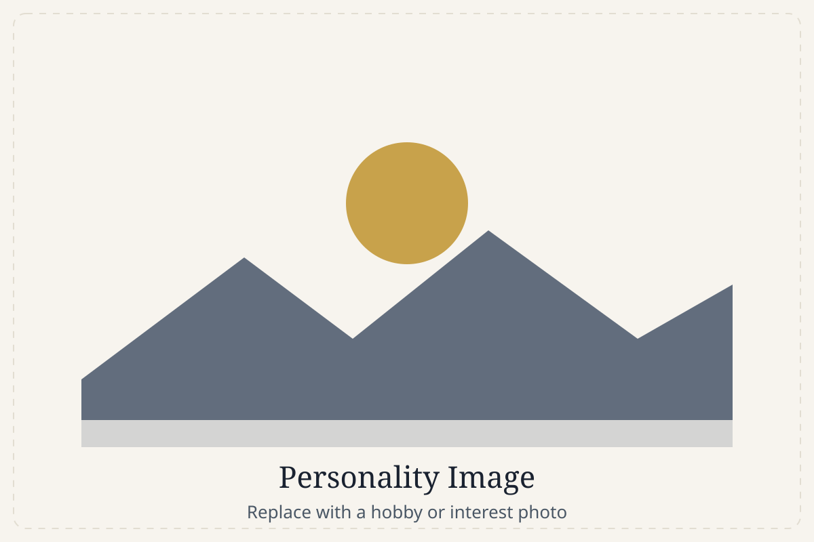

Professional Biography
Leadership from the operations floor, clarity from the communication classroom, and craft from the keyboard: here's the story that connects them.

I'm Brandon Davenport, a commissioned officer in the United States Space Force and an emerging software engineer. For nearly a decade I've worked where precision matters most, directing real-time space operations, leading diverse teams, and helping safeguard the systems our nation depends on. Along the way I found that my favorite problems live at the seam between people and technology, and I've built my education and projects around solving them.
As a Space Operations Officer, I direct real-time orbital operations and monitor mission-critical aerospace systems. The work rewards calm under pressure: leading cross-functional teams, resolving anomalies quickly, analyzing complex system data, and continually refining procedures to keep the mission ready. It also rewards communication: translating technical detail into clear decisions for audiences that range from technicians to senior commanders.
I've pursued education deliberately. My M.S. in Organizational Communication (Murray State University, 4.0 GPA) sharpened how I structure information and lead teams. A graduate certificate in Data Analytics from the Air Force Institute of Technology grounded my decisions in evidence. My B.S. in Information Technology (Liberty University) built my technical foundation, and my Space Force career began with an A.A.S. in Mechanical and Electrical Technology. The through-line is simple: I keep adding the tools I need to solve the next problem.
That habit led me to build. I taught myself full-stack development and created BARAD-DUR, an AI-augmented project-management platform, along with a suite of Python and PowerShell automations that cut administrative overhead for my team. I also designed and built an accessible website for a nonprofit parent–teacher association. Each project taught me something a classroom couldn't: how to host and debug a live system, design an interface people actually enjoy using, and integrate AI responsibly into a real workflow.
What ties it all together is a commitment to clarity. Whether I'm writing code, a briefing, or documentation, my goal is to make complex things understandable and genuinely useful. As I move toward a software engineering career, I bring the discipline of military operations, the empathy of a communicator, and the curiosity of a builder.
Principles I bring to every team
- Clarity over cleverness. I communicate so the audience can act, not so I can show off.
- Mission first. I understand the goal before I reach for a solution.
- Bias for building. I learn fastest by making something real and iterating on it.
- Steady under pressure. Operations taught me methodical, unhurried problem-solving.
- Continuous learning. There's always a next tool worth adding to the kit.
- Ownership. I follow a problem all the way to a working, documented result.
Away from the console, I'm happiest building something or learning a new skill, whether that's training toward a personal fitness goal, exploring a new programming concept, or (as the codename of my BARAD-DUR project hints) enjoying a good bit of world-building fiction. Curiosity is the common thread.